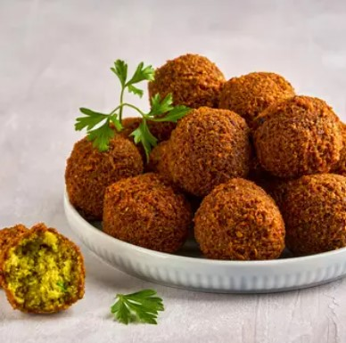
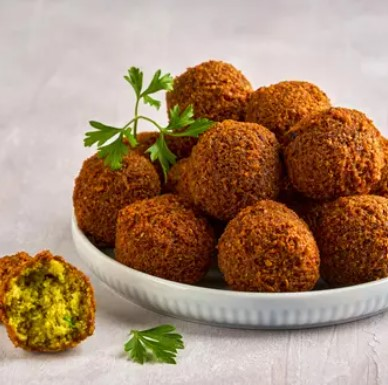

One of the most famous restaurants in the city of Jenin.

Al-Aqsa Restaurant is located in the city of Jenin, on King Faisal Street, near the main roundabout.
Al-Aqsa Restaurant is famous for many delicious dishes, most notably shawarma, falafel, and kibbeh.
 
